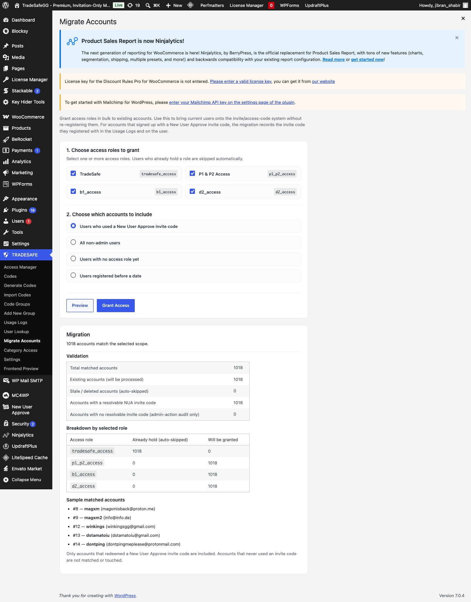
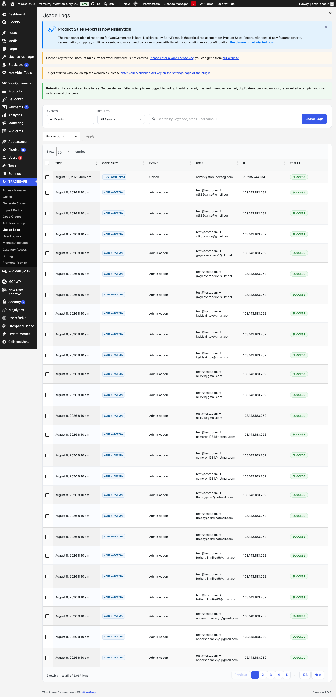
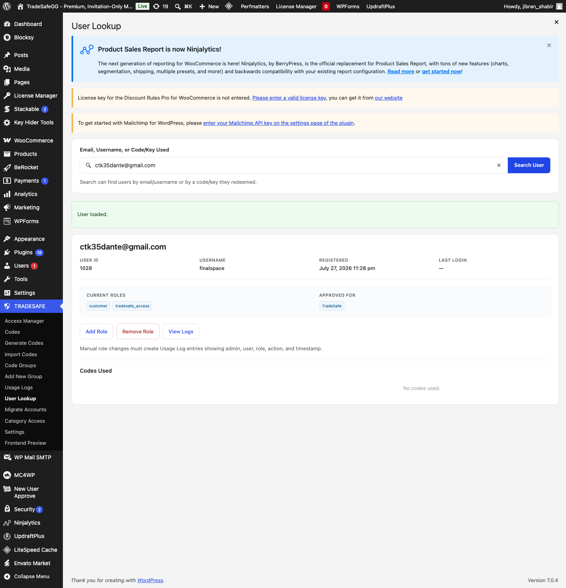
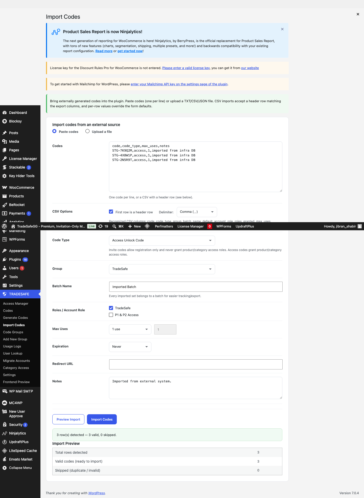
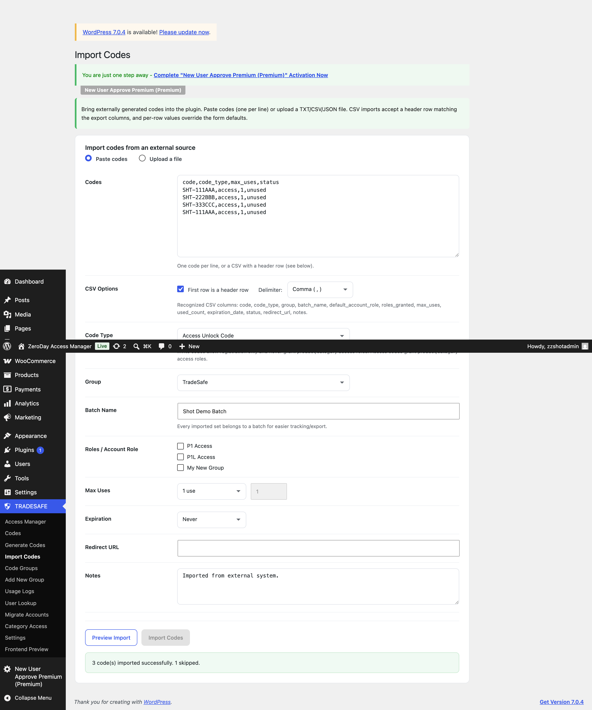
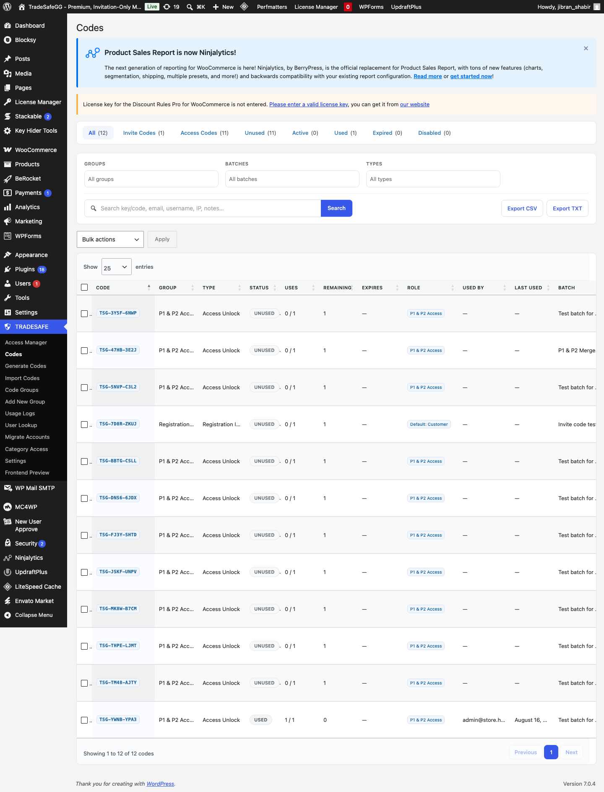
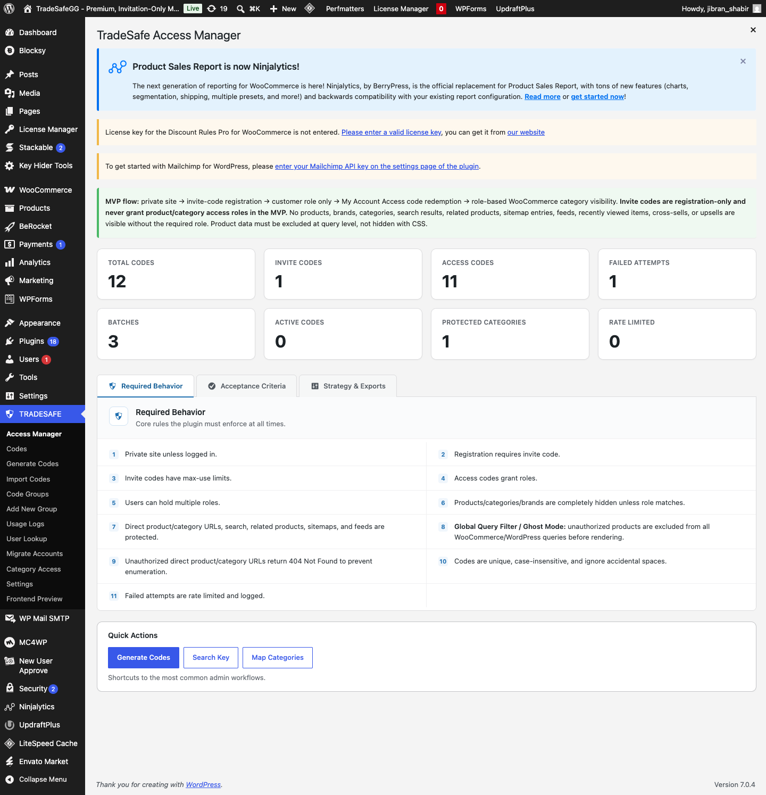

For each of the three requirements: what you asked for, how the build fixes it,
and the step-by-step checks to verify it on the site — so you can sign off with confidence.
All screenshots in this guide were captured from the live staging environment —
staging.store.tradesafe.gg (admin account, read-only visits; no client data was changed).
The one exception is the import success banner, which is a local demonstration because running a real
import would modify staging data.
1 Migrate Accounts keeps each user's invite code BLOCKER
The migration previously granted access roles but never recorded which invite code a user
registered with. Because every existing product-key token is encrypted with that code, it must survive
migration. This build resolves the NUA invite code per user and stores it in the plugin's data.
What the client asked for
"Migrate Accounts loses the invite codes. It only grants roles; it never reads which code a user
registered with, and the audit rows it writes have an empty code column. I need the exact code string
per user after migration — all existing product key tokens are encrypted with it."
"During migration, look up the user's NUA code (usermeta nua_invcode_used →
invitation_code post title) and write it into the zdam_code_logs row like a
real redemption (code filled in, is_success=1, event_type registration, not
admin_action). Or dump it into a usermeta per user — just tell me where it ends up."
How this build fixes it
During migration the plugin looks up each user's NUA invite code — from the user's
nua_invcode_used meta to the invitation_code post title — and records it.
Users with a resolvable code get a redemption-style log row in the Usage Logs:
event_type = registration, is_success = 1, code column = the exact
invite-code string, roles granted, note "Migrate Accounts".
The same code is also saved on the user's profile as
zdam_migrated_invite_code usermeta — so you can query it either from the logs or from the
usermeta table.
Users with no resolvable code still get a normal admin-action audit row (empty code
column). The Preview button tells you in advance exactly how many accounts fall into each bucket
before you grant anything.
Where the invite code ends up (answer to "where does it go")
User Lookup detail · SQL SELECT user_id, meta_value FROM {prefix}usermeta WHERE meta_key='zdam_migrated_invite_code'
Users whose invite code cannot be resolved get a normal admin-audit row (no code column content).
The preview tells you in advance how many accounts fall into each bucket.
Step-by-step checks
Prepare a reference account
Pick a user on the test site who is known to have registered with a New User Approve invite code
(e.g. one that shows in NUA → Invitation Codes as "registered"). Note their email and the code string
they used.
Open TRADESAFE → Migrate Accounts
Confirm the intro explains that invite codes are resolved and recorded, and that the page lists the
scope options (e.g. "Users who used a New User Approve invite code").
Click Preview
Expected: the validation table shows two new rows — an
Accounts with a resolvable NUA invite code count and an
Accounts with no resolvable invite code (admin-action audit only) count. The two numbers
add up to the total matched accounts.

Live staging — Migrate Accounts → Preview. The validation table reports
Total matched accounts 1,018, Accounts with a resolvable NUA invite code 1,018,
no resolvable invite code 0. The role breakdown (already hold / will be granted) and the
sample matched accounts appear below.
Run the migration
Select at least one access role and your scope, then confirm. Wait for the success notice.
Expected: a success message stating how many new grants were applied.
Check TRADESAFE → Usage Logs
Filter by the reference user's email. Find the row for this user.
Expected: Event = Registration, Result = Success,
and the Code column shows the invite-code string the user actually registered with
(not empty, not a generated plugin code).

Live staging — Usage Logs. The rows shown (Aug 8, ADMIN-ACTION, no
code populated) were written by the migration before this fix — exactly the gap the fix closes.
After running the updated migration, resolvable invite codes appear as
Registration / Success rows with the Code column populated.
Check TRADESAFE → User Lookup
Search the reference user's email.
Expected: the user detail shows the resolved invite code
(and the same Registration/Success event).

Live staging — User Lookup. Searching a user who was migrated before the fix shows
Codes Used: No codes used — confirming the exact gap this fix closes. After re-running the updated
migration, the user's invite code appears here and as a Registration/Success row in Usage Logs.
(Admin only) Confirm the per-user usermeta
-- replace {prefix} with your table prefix (default wp_)
SELECT user_id, meta_value
FROM {prefix}usermeta
WHERE meta_key = 'zdam_migrated_invite_code';
Expected: one row per migrated NUA user with
meta_value = their exact invite-code string.
Acceptance: the exact invite-code string per user is retrievable after migration —
both in zdam_code_logs (Usage Logs / User Lookup) and in the zdam_migrated_invite_code
usermeta. No code column is empty for accounts that had an invite code.
2 Import and Export codes
Invite codes can now be imported into the plugin (paste or file upload) so codes generated
through the server-infrastructure database can be assigned to user accounts. The existing
export (CSV/TXT) remains available for the reverse direction.
What the client asked for
"Invite codes can only be generated inside the plugin now, no import. I either need to be able to
import codes we generate (this will be done through a different database that runs the server infra),
or export the ones generated so I can import them into our system. Because I need to assign them to
user accounts."
How this build fixes it
New "Import Codes" page under TRADESAFE: paste codes one per line, or upload a
TXT / CSV / JSON file. CSV files may include a header row (code, code_type, group, batch_name,
max_uses, expiration_date, status, notes, …) and per-row values override the form defaults.
Preview before importing: the page counts total rows, valid codes ready to import,
and skipped (duplicate / invalid) codes with a reason — nothing is written until you click
Import Codes.
Imported codes land in the normal Codes list with a batch name, and behave exactly
like generated codes (assignable, redeemable, exportable).
Export (CSV / TXT) already existed and is unchanged — codes now flow in both
directions.
Part A — Import codes
Open TRADESAFE → Import Codes
A new submenu page under the TRADESAFE menu. If you don't see it, refresh the admin menu.
Paste codes — one per line
Select "Paste codes" and paste a handful of test codes, e.g.:
TSG-7F3K9Q
TSG-2M8X5B
TSG-9W4R6T
OR upload a file
Select "Upload a file" and choose a .txt / .csv file. The file content is
loaded into the textarea automatically. CSV files may include a header row, e.g.:
code,code_type,max_uses,expiration_date,notes
TSG-7F3K9Q,access,1,2026-12-31,batch from infra DB
TSG-2M8X5B,access,unlimited,never,
Set the form defaults
Choose Code Type, Group, and a Batch Name (e.g. imported-june-batch). Max Uses and
Expiration behave like Generate Codes.
Click Preview Import
Expected: a preview panel with Total rows detected,
Valid codes (ready to import), and Skipped counts. Duplicates, empty lines, and
invalid values are listed with a reason and excluded.

Live staging — Import Codes → Preview. A pasted CSV with a header row is analyzed:
Total rows detected 3, Valid codes (ready to import) 3,
Skipped 0. Per-row values (here code_type=access) are read from the CSV columns.
Click Import Codes
Expected: a success message "N code(s) imported successfully".

Import → Success (local demonstration). The actual import is not executed
on the staging server so that client data is untouched. The green banner reports
N code(s) imported successfully.
Verify in TRADESAFE → Codes
Search the batch name or one of the imported codes.
Expected: the imported codes appear with status Unused,
correct code type, group, and the batch name you set. They can now be assigned / redeemed like
generated codes.

Live staging — TRADESAFE → Codes. The current list (Showing 1 to 12 of 12
codes) shows the real registration invite codes. Once an import is run, the imported batch appears
here with status Unused, assignable like generated codes.
Part B — Export codes (existing feature)
Open TRADESAFE → Codes
Apply a filter (status, type, batch) or select rows.
Click Export CSV or Export TXT
Expected: a file downloads with the current filtered codes
(including type, group, batch, max_uses, status). This is the file you can import into your
server-infrastructure database.
Acceptance: externally generated codes can be imported (paste or file, with
preview) and plugin-generated codes can be exported (CSV/TXT) — codes flow both directions.
3 FSLM encryption key — migration day (server)
This is a server-side requirement, not a plugin feature. The license manager's
encryption key lives in a file, not the database. It must be copied to the new server along with the
database, or every already-sold product key becomes unreadable.
What the client asked for
"For migration day (server, not plugin): wp-content/uploads/fslm_files/encryption_key.php
must be copied to the new server along with the DB. The license manager's encryption key lives in that
file, not the database — if it's missing, every already-sold key becomes unreadable."
How this build handles it
This is not something the plugin can copy for you — the key file lives outside the
plugin. So the fix is documentation + a safety warning.
Migration-day runbook: docs/MIGRATION.md and the steps below give the
exact copy + sha256 verification commands for old server → new server.
Dashboard safety net: if the server has FSLM installed but the key file is missing,
the TRADESAFE dashboard shows a red "FSLM encryption key missing" notice with the exact expected
path — so the gap is visible before customers are affected.
Critical file:wp-content/uploads/fslm_files/encryption_key.php
— if it is missing on the new server, already-sold keys cannot be decrypted.
Pre-migration (old server)
Confirm the key file exists
ls -la wp-content/uploads/fslm_files/encryption_key.php
sha256sum wp-content/uploads/fslm_files/encryption_key.php # record this hash
Expected: the file exists and is readable. Record the
sha256 hash — you will compare it on the new server.
Back everything up
Full file copy + full database dump. The key file must be inside the copy of
wp-content/uploads/fslm_files/.
Migration (new server)
Copy the database
Import the dump into the new server's database.
Copy wp-content/uploads/fslm_files/ (with the key file)
Verify the key arrived:
Expected: the hash matches the one recorded on the old server.
Check the dashboard notice
Log in to the new server and open TRADESAFE → Access Manager.
Expected: when FSLM is present and the key file is missing, a red
"FSLM encryption key missing" notice is shown with the exact expected path. When the key file is
present, no notice appears.

Live staging — TRADESAFE → Access Manager — the dashboard as it appears on the
staging server. FSLM is not present on staging, so no warning is expected; on the new production server,
if FSLM is present but encryption_key.php is missing, a red notice appears above these stats
with the exact expected path.
Smoke-test an existing product key
Open a license/product-key detail page and confirm the stored (encrypted) token still decrypts.
Expected: previously sold keys remain readable.
Acceptance:wp-content/uploads/fslm_files/encryption_key.php is copied
to the new server with the database, its sha256 matches, the dashboard shows no missing-key warning,
and an existing product key still decrypts.
✓ Sign-off checklist
Migrate Accounts preview reports resolvable vs. missing invite codes.
After migration, Usage Logs shows Registration/Success rows with the user's invite-code string.
After migration, User Lookup shows the user's invite code.
zdam_migrated_invite_code usermeta holds the exact code per migrated user.
Import Codes: paste and file upload both work; preview counts match; codes appear in the Codes list.
Export Codes: CSV/TXT export still produces a usable file.
Migration day: encryption_key.php copied with the DB; sha256 matches on new server.
Dashboard shows the "FSLM encryption key missing" notice only when the key is genuinely absent.
প্রতিটি প্রয়োজনীয় কাজের জন্য: আপনি কী চেয়েছিলেন, কীভাবে তৈরি করে ঠিক করা হয়েছে, আর ওয়েবসাইটে তা ধাপে ধাপে মিলিয়ে দেখার নিয়ম — যেন আত্মবিশ্বাসের সাথে চূড়ান্ত অনুমোদন দিতে পারেন।
প্রয়োজন ১ · অ্যাকাউন্ট মাইগ্রেশনে ইনভাইট কোড সংরক্ষণপ্রয়োজন ২ · কোড ইমপোর্ট / এক্সপোর্টপ্রয়োজন ৩ · FSLM এনক্রিপশন চাবি (মাইগ্রেশন দিন)
এই গাইডের সব ছবি সক্রিয় পরীক্ষার (staging) পরিবেশ থেকে তোলা —
staging.store.tradesafe.gg (অ্যাডমিন অ্যাকাউন্ট দিয়ে, শুধু দেখার জন্য; কোনো ক্লায়েন্টের ডাটা বদলানো হয়নি)।
একমাত্র ব্যতিক্রম হলো ইমপোর্টের সফল বার্তার ছবিটা — সেটা লোকাল ডেমোনস্ট্রেশন, কারণ আসল ইমপোর্ট চালালে পরীক্ষার সাইটের ডাটা বদলে যেত।
১ অ্যাকাউন্ট মাইগ্রেশন প্রত্যেক ব্যবহারকারীর ইনভাইট কোড রেখে দেয় সমস্যা
আগে মাইগ্রেশন শুধু ব্যবহারকারীদের অনুমতি (রোল) দিত, কিন্তু কোন ইনভাইট কোড দিয়ে কে রেজিস্ট্রেশন করেছিল সেটা লেখে রাখত না।
সমস্যা হলো — প্রতিটা পুরনো প্রোডাক্ট-কি টোকেন (product key) ওই কোড দিয়েই তালাবন্ধ করা। তাই মাইগ্রেশনেও কোডটা বেঁচে থাকতে হবে।
এই বিল্ড প্রত্যেক ব্যবহারকারীর NUA ইনভাইট কোড খুঁজে বের করে প্লাগিনের ডাটায় জমা রাখে।
ক্লায়েন্ট কী চেয়েছিলেন
"Migrate Accounts-এ ইনভাইট কোড হারিয়ে যায়। এটি শুধু রোল দেয়; কখনো পড়ে না যে ব্যবহারকারী কোন কোড দিয়ে রেজিস্টার করেছে, আর যে অডিট লাইন লেখে তাতে কোড কলাম খালি থাকে। মাইগ্রেশনের পর প্রত্যেক ব্যবহারকারীর আসল কোড স্ট্রিংটা দরকার — সব পুরনো প্রোডাক্ট কি টোকেন ওই কোড দিয়েই এনক্রিপ্ট করা।"
"মাইগ্রেশনের সময় ব্যবহারকারীর NUA কোড খুঁজো (usermeta nua_invcode_used → invitation_code পোস্ট টাইটেল) এবং তা zdam_code_logs টেবিলে লিখো, যেন আসল রিডিমশনের মতো দেখায় (কোড ভরা, is_success=1, event_type রেজিস্ট্রেশন, admin_action নয়)। অথবা প্রত্যেক ব্যবহারকারীর জন্য usermeta-তে জমা করো — শুধু বলো শেষ পর্যন্ত কোথায় থাকবে।"
এই বিল্ডে কীভাবে ঠিক করা হয়েছে
মাইগ্রেশনের সময় প্লাগিন প্রত্যেক ব্যবহারকারীর NUA ইনভাইট কোড খুঁজে বের করে — usermeta nua_invcode_used থেকে invitation_code পোস্টের টাইটেল পর্যন্ত — এবং তা রেকর্ড করে।
যাদের কোড মেলে, তারা Usage Logs-এ রিডেমশন-ধাঁচের লগ লাইন পায়:
event_type = registration, is_success = 1, কোড কলাম = আসল ইনভাইট কোড স্ট্রিং, রোল দেওয়া হয়েছে, নোট "Migrate Accounts"।
একই কোড ব্যবহারকারীর প্রোফাইলেও জমা হয় zdam_migrated_invite_code usermeta নামে — চাইলে লগ থেকে বা usermeta টেবিল থেকে, যেকোনোটা দিয়ে খুঁজতে পারবে।
যাদের কোড মেলে না, তাদের জন্য স্বাভাবিক admin-action অডিট লাইন লেখা হয় (কোড কলাম খালি)। Preview বোতাম কিছু গ্রান্ট করার আগেই বলে দেয় কতগুলো অ্যাকাউন্ট কোন দলে পড়বে।
ইনভাইট কোড শেষ পর্যন্ত কোথায় থাকে ("কোথায় জমা হয়" এর উত্তর)
User Lookup ডিটেইল · SQL SELECT user_id, meta_value FROM {prefix}usermeta WHERE meta_key='zdam_migrated_invite_code'
যাদের ইনভাইট কোড মেলে না, তাদের জন্য স্বাভাবিক admin-audit লাইন থাকে (কোড কলাম খালি)।
Preview আগেই বলে দেয় কতগুলো অ্যাকাউন্ট কোন দলে পড়বে।
ধাপে ধাপে যাচাই
রেফারেন্স অ্যাকাউন্ট প্রস্তুত করো
টেস্ট সাইটের এমন একজন ব্যবহারকারী বেছে নাও যিনি New User Approve-এর ইনভাইট কোড দিয়ে রেজিস্টার করেছেন
(যেমন NUA → Invitation Codes-এ যাকে "registered" দেখায়)। তার ইমেইল আর ব্যবহার করা কোড স্ট্রিংটা লিখে রাখো।
TRADESAFE → Migrate Accounts খোলো
ইন্ট্রো যেন বলে যে ইনভাইট কোড খোঁজা ও রেকর্ড করা হয়, আর পেজে স্কোপ অপশন থাকে
(যেমন "যারা New User Approve ইনভাইট কোড ব্যবহার করেছে")।
Preview চাপো
প্রত্যাশা: ভ্যালিডেশন টেবিলে দুটো নতুন লাইন দেখাবে — কোড মেলে এমন অ্যাকাউন্ট এর সংখ্যা আর কোড মেলে না এমন অ্যাকাউন্ট (শুধু admin-action অডিট) এর সংখ্যা। দুটোর যোগফল মোট ম্যাচ করা অ্যাকাউন্টের সমান হবে।
সক্রিয় staging — Migrate Accounts → Preview. ভ্যালিডেশন টেবিল রিপোর্ট করে মোট ম্যাচ করা অ্যাকাউন্ট ১,০১৮, কোড মেলে এমন NUA ইনভাইট অ্যাকাউন্ট ১,০১৮, কোড মেলে না এমন ০। রোলের ভাগ (আগে থেকেই আছে / নতুন দেওয়া হবে) আর নমুনা ম্যাচ করা অ্যাকাউন্ট নিচে দেখা যায়।
মাইগ্রেশন চালাও
কমপক্ষে একটা অ্যাক্সেস রোল আর তোমার স্কোপ বেছে কনফার্ম করো। সফল নোটিশের অপেক্ষা করো।
প্রত্যাশা: কতগুলো নতুন গ্রান্ট দেওয়া হলো, তা বলে সফল বার্তা আসবে।
TRADESAFE → Usage Logs চেক করো
রেফারেন্স ব্যবহারকারীর ইমেইলে ফিল্টার করো। এই ব্যবহারকারীর লাইনটা খুঁজে বের করো।
প্রত্যাশা: ইভেন্ট = রেজিস্ট্রেশন, ফলাফল = সফল, আর কোড কলামে ওই ব্যবহারকারীর আসল ইনভাইট কোড স্ট্রিং দেখা যাবে (খালি নয়, প্লাগিন-জেনারেটেড কোডও নয়)।
সক্রিয় staging — Usage Logs. যেসব লাইন দেখা যাচ্ছে (আগস্ট ৮, ADMIN-ACTION, কোড খালি) সেগুলো মাইগ্রেশন এই ফিক্সের আগে লিখেছিল — ঠিক সেই ঘাটতিটাই ফিক্স পূরণ করে। নতুন মাইগ্রেশন চালানোর পর, মেলে এমন ইনভাইট কোডগুলো রেজিস্ট্রেশন / সফল লাইন হিসেবে কোড কলাম ভরা অবস্থায় আসবে।
TRADESAFE → User Lookup চেক করো
রেফারেন্স ব্যবহারকারীর ইমেইল খুঁজো।
প্রত্যাশা: ইউজার ডিটেইলে মেলে এমন ইনভাইট কোড দেখা যাবে (আর একই রেজিস্ট্রেশন/সফল ইভেন্ট)।
সক্রিয় staging — User Lookup. ফিক্সের আগে মাইগ্রেট করা একজন ব্যবহারকারীকে খুঁজলে Codes Used: No codes used দেখায় — ঠিক এই ঘাটতিটাই ফিক্স পূরণ করে। নতুন মাইগ্রেশন আবার চালানোর পর, এই ব্যবহারকারীর ইনভাইট কোড এখানে আর Usage Logs-এ রেজিস্ট্রেশন/সফল লাইন হিসেবে দেখা যাবে।
-- {prefix} তোমার টেবিল প্রিফিক্স দিয়ে বদলাও (ডিফল্ট wp_)
SELECT user_id, meta_value
FROM {prefix}usermeta
WHERE meta_key = 'zdam_migrated_invite_code';
প্রত্যাশা: প্রত্যেক মাইগ্রেটেড NUA ব্যবহারকারীর জন্য এক লাইন, যার meta_value = তাদের আসল ইনভাইট কোড স্ট্রিং।
গৃহীত হবে যখন: মাইগ্রেশনের পর প্রত্যেক ব্যবহারকারীর আসল ইনভাইট কোড বের করা যায় —
zdam_code_logs-এ (Usage Logs / User Lookup) আর zdam_migrated_invite_code usermeta-তে। যাদের ইনভাইট কোড ছিল, তাদের কোড কলাম কখনো খালি নয়।
২ কোড ইমপোর্ট ও এক্সপোর্ট
ইনভাইট কোড এখন প্লাগিনে ইমপোর্ট করা যায় (পেস্ট করে বা ফাইল আপলোড করে) — যাতে সার্ভার-ইনফ্রাস্ট্রাকচার
ডাটাবেসে তৈরি কোডগুলো ইউজার অ্যাকাউন্টে বাঁধা যায়। আগের এক্সপোর্ট (CSV/TXT) উল্টো দিকের জন্য আগের মতোই আছে।
ক্লায়েন্ট কী চেয়েছিলেন
"ইনভাইট কোড এখন প্লাগিনের ভিতরেই বানানো যায়, ইমপোর্টের উপায় নেই। আমাদের তৈরি কোড ইমপোর্ট করতে হবে (সেটা হবে ভিন্ন একটা ডাটাবেস থেকে, যে সার্ভার ইনফ্রা চালায়), অথবা প্লাগিনে বানানো কোড এক্সপোর্ট করতে হবে যাতে আমাদের সিস্টেমে ঢোকানো যায়। কারণ কোডগুলো ইউজার অ্যাকাউন্টে বাঁধতে হবে।"
এই বিল্ডে কীভাবে ঠিক করা হয়েছে
TRADESAFE মেনুতে নতুন "Import Codes" পেজ: প্রতি লাইনে একটা করে কোড পেস্ট করো, অথবা TXT / CSV / JSON ফাইল আপলোড করো। CSV ফাইলে শিরোনাম লাইন থাকতে পারে (code, code_type, group, batch_name, max_uses, expiration_date, status, notes, …) এবং প্রতি লাইনের মান ফর্মের ডিফল্টের চেয়ে প্রাধান্য পায়।
ইমপোর্টের আগে প্রিভিউ: পেজ মোট লাইন, ইমপোর্টের জন্য প্রস্তুত বৈধ কোড, আর বাদ পড়া (ডুপ্লিকেট / ভুল) কোড — কারণসহ — গণনা করে। Import Codes চাপার আগ পর্যন্ত কিছুই লেখা হয় না।
ইমপোর্ট করা কোড সাধারণ Codes তালিকায় ব্যাচের নামসহ আসে, আর প্লাগিনে বানানো কোডের মতোই কাজ করে (বাঁধা যায়, রিডিম হয়, এক্সপোর্ট হয়)।
Export (CSV / TXT) আগে থেকেই আছে এবং অপরিবর্তিত — এখন কোড দুদিকেই চলাচল করে।
অংশ ক — কোড ইমপোর্ট
TRADESAFE → Import Codes খোলো
TRADESAFE মেনুর নিচে নতুন সাবমেনু পেজ। না দেখলে অ্যাডমিন মেনু রিফ্রেশ করো।
কোড পেস্ট করো — প্রতি লাইনে একটা
"Paste codes" বেছে কয়েকটা টেস্ট কোড পেস্ট করো, যেমন:
TSG-7F3K9Q
TSG-2M8X5B
TSG-9W4R6T
অথবা ফাইল আপলোড করো
"Upload a file" বেছে একটি .txt / .csv ফাইল নাও। ফাইলের কনটেন্ট নিজে নিজেই টেক্সট এরিয়ায় ঢুকে যায়। CSV ফাইলে শিরোনাম লাইন থাকতে পারে, যেমন:
code,code_type,max_uses,expiration_date,notes
TSG-7F3K9Q,access,1,2026-12-31,batch from infra DB
TSG-2M8X5B,access,unlimited,never,
চেনা CSV কলাম: code, code_type, group, batch_name, default_account_role, roles_granted, max_uses, used_count, expiration_date, status, redirect_url, notes। প্রতি লাইনের মান ফর্মের ডিফল্টের চেয়ে প্রাধান্য পায়।
ফর্মের ডিফল্ট সেট করো
Code Type, Group, আর একটা Batch Name বেছে নাও (যেমন imported-june-batch)। Max Uses আর Expiration Generate Codes-এর মতোই কাজ করে।
Preview Import চাপো
প্রত্যাশা: প্রিভিউ প্যানেলে Total rows detected, Valid codes (ready to import), আর Skipped সংখ্যা দেখাবে। ডুপ্লিকেট, খালি লাইন, আর ভুল মান কারণসহ তালিকাভুক্ত ও বাদ যাবে।
সক্রিয় staging — Import Codes → Preview. শিরোনাম লাইনসহ পেস্ট করা CSV বিশ্লেষণ করা হয়: মোট ধরা পড়া লাইন ৩, বৈধ কোড (ইমপোর্টের জন্য প্রস্তুত) ৩, বাদ ০। প্রতি লাইনের মান (এখানে code_type=access) CSV কলাম থেকে পড়া হয়।
Import Codes চাপো
প্রত্যাশা: "N code(s) imported successfully" সফল বার্তা আসবে।
Import → সফল (লোকাল ডেমোনস্ট্রেশন). আসল ইমপোর্ট staging সার্ভারে চালানো হয় না, যেন ক্লায়েন্টের ডাটা অক্ষত থাকে। সবুজ ব্যানারে N code(s) imported successfully রিপোর্ট হয়।
TRADESAFE → Codes-এ যাচাই করো
ব্যাচের নাম বা ইমপোর্ট করা কোনো একটা কোড খুঁজো।
প্রত্যাশা: ইমপোর্ট করা কোড status Unused, সঠিক কোড টাইপ, গ্রুপ, আর তোমার দেওয়া ব্যাচের নামসহ দেখা যাবে। এখন এগুলো সাধারণ কোডের মতো বাঁধা / রিডিম করা যায়।
সক্রিয় staging — TRADESAFE → Codes. বর্তমান তালিকা (মোট ১২ কোডের মধ্যে ১ থেকে ১২ দেখানো হচ্ছে) আসল রেজিস্ট্রেশন ইনভাইট কোডগুলো দেখায়। একবার ইমপোর্ট চালালে, ইমপোর্ট করা ব্যাচটা এখানে status Unused নিয়ে আসবে, প্লাগিনে বানানো কোডের মতোই বাঁধা যাবে।
প্রত্যাশা: বর্তমান ফিল্টার করা কোডসহ একটা ফাইল নামবে (type, group, batch, max_uses, status সহ)। এই ফাইলটাই তোমার সার্ভার-ইনফ্রাস্ট্রাকচার ডাটাবেসে ইমপোর্ট করতে পারবে।
গৃহীত হবে যখন: বাইরে বানানো কোড ইমপোর্ট করা যায় (পেস্ট বা ফাইল, প্রিভিউসহ) আর প্লাগিনে বানানো কোড এক্সপোর্ট করা যায় (CSV/TXT) — কোড দুদিকেই চলাচল করে।
৩ FSLM এনক্রিপশন চাবি — মাইগ্রেশনের দিন (সার্ভার)
এটা সার্ভার-সাইড কাজ, প্লাগিনের ফিচার নয়। লাইসেন্স ম্যানেজারের এনক্রিপশন চাবি একটা ফাইলে থাকে,
ডাটাবেজে নয়। নতুন সার্ভারে ডাটাবেজের সাথে এটাও কপি করতে হবে; নইলে আগে বিক্রি হওয়া প্রতিটা প্রোডাক্ট কি পড়া যাবে না।
ক্লায়েন্ট কী চেয়েছিলেন
"মাইগ্রেশনের দিনের জন্য (সার্ভার, প্লাগিন নয়): wp-content/uploads/fslm_files/encryption_key.php অবশ্যই ডাটাবেজের সাথে নতুন সার্ভারে কপি করতে হবে। লাইসেন্স ম্যানেজারের এনক্রিপশন চাবি এই ফাইলে থাকে, ডাটাবেজে নয় — এটা না থাকলে আগে বিক্রি হওয়া প্রতিটা কি পড়া যাবে না।"
এই বিল্ডে কীভাবে সামলানো হয়
এটা প্লাগিন নিজে কপি করে দিতে পারে না — চাবি ফাইলটা প্লাগিনের বাইরে থাকে। তাই সমাধান হলো ডকুমেন্টেশন + একটা সেফটি ওয়ার্নিং।
মাইগ্রেশন-দিনের রানবুক: docs/MIGRATION.md আর নিচের ধাপগুলোতে পুরনো সার্ভার → নতুন সার্ভারে ঠিক কীভাবে কপি আর sha256 মিলিয়ে দেখার কমান্ড আছে।
ড্যাশবোর্ড সেফটি নেট: সার্ভারে FSLM ইনস্টল থাকলে কিন্তু চাবি ফাইলটা না থাকলে, TRADESAFE ড্যাশবোর্ডে লাল "FSLM encryption key missing" নোটিশ দেখায় — সঠিক প্রত্যাশিত পাথসহ — যেন কাস্টমার আক্রান্ত হওয়ার আগেই সমস্যাটা চোখে পড়ে।
অতি গুরুত্বপূর্ণ ফাইল:wp-content/uploads/fslm_files/encryption_key.php
— নতুন সার্ভারে এটা না থাকলে আগে বিক্রি হওয়া কি ডিক্রিপ্ট করা যাবে না।
মাইগ্রেশনের আগে (পুরনো সার্ভার)
চাবি ফাইলটা আছে কিনা নিশ্চিত হও
ls -la wp-content/uploads/fslm_files/encryption_key.php
sha256sum wp-content/uploads/fslm_files/encryption_key.php # এই হ্যাশটা লিখে রাখো
প্রত্যাশা: ফাইলটা আছে আর পড়া যায়। sha256 হ্যাশটা লিখে রাখো — নতুন সার্ভারে মিলিয়ে দেখবে।
সব ব্যাকআপ নাও
পুরো ফাইল কপি + পুরো ডাটাবেজ ডাম্প। চাবি ফাইলটা যেন wp-content/uploads/fslm_files/ কপির ভিতরে থাকে।
মাইগ্রেশন (নতুন সার্ভার)
ডাটাবেজ কপি করো
ডাম্পটা নতুন সার্ভারের ডাটাবেজে ইমপোর্ট করো।
প্রত্যাশা: হ্যাশটা পুরনো সার্ভারে লেখা হ্যাশের সাথে মিলবে।
ড্যাশবোর্ড নোটিশ চেক করো
নতুন সার্ভারে লগ ইন করে TRADESAFE → Access Manager খোলো।
প্রত্যাশা: FSLM থাকলে আর চাবি ফাইল না থাকলে, লাল "FSLM encryption key missing" নোটিশ সঠিক প্রত্যাশিত পাথসহ দেখাবে। চাবি ফাইল থাকলে কোনো নোটিশ আসবে না।
সক্রিয় staging — TRADESAFE → Access Manager — staging সার্ভারে ড্যাশবোর্ড যেমন দেখায়। staging-এ FSLM নেই, তাই কোনো সতর্কবার্তা প্রত্যাশা করা হয় না; নতুন প্রোডাকশন সার্ভারে FSLM থাকলে কিন্তু encryption_key.php না থাকলে, এই পরিসংখ্যানের উপরে সঠিক প্রত্যাশিত পাথসহ লাল নোটিশ আসবে।
আগের প্রোডাক্ট কি দিয়ে স্মোক-টেস্ট করো
লাইসেন্স/প্রোডাক্ট-কি ডিটেইল পেজ খুলে নিশ্চিত হও যেন জমা (এনক্রিপ্টেড) টোকেনটা এখনো ডিক্রিপ্ট হয়।
প্রত্যাশা: আগে বিক্রি হওয়া কি এখনো পড়া যায়।
গৃহীত হবে যখন:wp-content/uploads/fslm_files/encryption_key.php ডাটাবেজের সাথে নতুন সার্ভারে কপি হয়েছে, তার sha256 মিলেছে, ড্যাশবোর্ডে চাবি-নেই এমন সতর্কবার্তা নেই, আর আগের প্রোডাক্ট কি এখনো ডিক্রিপ্ট হয়।
✓ চূড়ান্ত অনুমোদনের চেকলিস্ট
Migrate Accounts-এর প্রিভিউ মেলে এমন বনাম মেলে না এমন ইনভাইট কোড রিপোর্ট করে।
মাইগ্রেশনের পর User Lookup ব্যবহারকারীর ইনভাইট কোড দেখায়।
zdam_migrated_invite_code usermeta-তে প্রত্যেক মাইগ্রেটেড ব্যবহারকারীর আসল কোড থাকে।
Import Codes: পেস্ট আর ফাইল আপলোড দুটোই কাজ করে; প্রিভিউ সংখ্যা মেলে; কোড Codes তালিকায় আসে।
Export Codes: CSV/TXT এক্সপোর্ট এখনো কাজের ফাইল বানায়।
মাইগ্রেশন দিন: encryption_key.php ডাটাবেজের সাথে কপি হয়েছে; নতুন সার্ভারে sha256 মিলেছে।
ড্যাশবোর্ড "FSLM encryption key missing" নোটিশ শুধু তখনই দেখায় যখন চাবি সত্যিই অনুপস্থিত।
TradeSafe Access Manager — کلائنٹ تصدیقی گائیڈ
تینوں ضروریات کے لیے: آپ نے کیا مانگا تھا، اس اپ ڈیٹ نے کیسے حل کیا، اور سائٹ پر تصدیق کرنے کے قدم بہ قدم طریقے — تاکہ آپ اعتماد کے ساتھ حتمی منظوری دے سکیں۔
ضرورت ۱ · اکاؤنٹ مائیگریشن میں دعوتی کوڈ محفوظضرورت ۲ · کوڈ امپورٹ / ایکسپورٹضرورت ۳ · FSLM انکرپشن کلید (مائیگریشن کا دن)
اس گائیڈ کی تمام تصاویر لائیو ٹیسٹنگ (staging) ماحول سے لی گئی ہیں —
staging.store.tradesafe.gg (ایڈمن اکاؤنٹ سے، صرف دیکھنے کے لیے؛ کسی کلائنٹ کا ڈیٹا نہیں بدلا گیا)۔
صرف ایک استثنا ہے — امپورٹ کی کامیابی کا پیغام، جو لوکل ڈیمو ہے کیونکہ اصلی امپورٹ چلانے سے ٹیسٹنگ سائٹ کا ڈیٹا بدل جاتا۔
۱ اکاؤنٹ مائیگریشن ہر صارف کا دعوتی کوڈ محفوظ رکھتا ہے مسئلہ
پہلے مائیگریشن صرف صارفین کو اجازت (رول) دیتا تھا، لیکن کبھی نہیں لکھتا تھا کہ صارف نے کس دعوتی کوڈ سے رجسٹریشن کی۔
مسئلہ یہ ہے کہ ہر پرانا پروڈکٹ کلید ٹوکن اسی کوڈ سے مقفل (انکرپٹ) ہوتا ہے۔ اس لیے مائیگریشن میں بھی یہ کوڈ محفوظ رہنا ضروری ہے۔
اس اپ ڈیٹ میں ہر صارف کا NUA دعوتی کوڈ ڈھونڈ کر پلگ ان کے ڈیٹا میں محفوظ کیا جاتا ہے۔
کلائنٹ نے کیا مانگا تھا
"Migrate Accounts دعوتی کوڈ کھو دیتا ہے۔ یہ صرف رول دیتا ہے؛ کبھی نہیں پڑھتا کہ صارف نے کس کوڈ سے رجسٹر کیا، اور جو آڈٹ ریکارڈ لکھتا ہے اس میں کوڈ کا خانہ خالی ہوتا ہے۔ مائیگریشن کے بعد ہر صارف کا اصلی کوڈ درکار ہے — تمام پرانے پروڈکٹ کلید ٹوکنز اسی سے انکرپٹ ہیں۔"
"مائیگریشن کے دوران صارف کا NUA کوڈ ڈھونڈیں (usermeta nua_invcode_used → invitation_code پوسٹ ٹائٹل) اور اسے zdam_code_logs ٹیبل میں لکھیں، بالکل اصلی ریڈمپشن کی طرح (کوڈ بھرا ہوا، is_success=1، event_type رجسٹریشن، admin_action نہیں)۔ یا ہر صارف کے لیے usermeta میں محفوظ کریں — بس بتائیں کہ آخر کہاں جائے گا۔"
اس اپ ڈیٹ میں کیسے حل کیا گیا
مائیگریشن کے دوران پلگ ان ہر صارف کا NUA دعوتی کوڈ ڈھونڈتا ہے — usermeta nua_invcode_used سے invitation_code پوسٹ کے ٹائٹل تک — اور اسے ریکارڈ کرتا ہے۔
جن کے کوڈ مل جاتے ہیں، ان کے لیے Usage Logs میں ریڈمپشن طرز کا ریکارڈ بنتا ہے: event_type = registration، is_success = 1، کوڈ کا خانہ = اصلی دعوتی کوڈ، دیے گئے رولز، نوٹ "Migrate Accounts"۔
یہی کوڈ صارف کی پروفائل پر بھیzdam_migrated_invite_code usermeta کے نام سے محفوظ ہوتا ہے — چاہیں تو لاگز سے یا usermeta ٹیبل سے، دونوں میں سے کسی سے بھی ڈھونڈ سکتے ہیں۔
جن کے کوڈ نہیں ملتے، ان کے لیے عام admin-action آڈٹ ریکارڈ بنتا ہے (کوڈ کا خانہ خالی)۔ Preview بٹن کچھ دینے سے پہلے ہی بتا دیتا ہے کہ کتنے اکاؤنٹس کس زمرے میں آئیں گے۔
دعوتی کوڈ آخر کہاں جاتا ہے ("کہاں محفوظ ہوتا ہے" کا جواب)
usermeta zdam_migrated_invite_code (ہر صارف کے لیے)
رجسٹریشن میں استعمال ہونے والا اصلی دعوتی کوڈ
User Lookup تفصیل · SQL SELECT user_id, meta_value FROM {prefix}usermeta WHERE meta_key='zdam_migrated_invite_code'
جن کا دعوتی کوڈ نہیں ملتا، ان کے لیے عام admin-audit ریکارڈ رہتا ہے (کوڈ کا خانہ خالی)۔
Preview پہلے ہی بتا دیتا ہے کہ کتنے اکاؤنٹس کس زمرے میں ہیں۔
قدم بہ قدم تصدیق
حوالہ اکاؤنٹ تیار کریں
ٹیسٹ سائٹ پر ایسا صارف چنیں جس نے New User Approve کے دعوتی کوڈ سے رجسٹر کیا ہو (جیسے NUA → Invitation Codes میں جسے "registered" دکھایا گیا ہے)۔ اس کا ای میل اور استعمال شدہ کوڈ لکھ لیں۔
TRADESAFE → Migrate Accounts کھولیں
تصدیق کریں کہ انٹرو یہ بتائے کہ دعوتی کوڈ ڈھونڈ کر ریکارڈ کیا جاتا ہے، اور پیج پر scope کے اختیارات موجود ہیں (جیسے "جنہوں نے New User Approve دعوتی کوڈ استعمال کیا")۔
Preview دبائیں
توقع: تصدیقی جدول میں دو نئی قطاریں — جن کے NUA دعوتی کوڈ ملے کی تعداد اور جن کے دعوتی کوڈ نہیں ملے (صرف admin-action آڈٹ) کی تعداد۔ دونوں کا مجموعہ کل مماثل اکاؤنٹس کے برابر ہوگا۔
لائیو staging — Migrate Accounts → Preview. تصدیقی جدول بتاتا ہے کل مماثل اکاؤنٹس ۱,۰۱۸، جن کے NUA دعوتی کوڈ ملے ۱,۰۱۸، جن کے کوڈ نہیں ملے ۰۔ رولز کی تقسیم (پہلے سے موجود / نئے دیے جائیں گے) اور نمونہ مماثل اکاؤنٹس نیچے نظر آتے ہیں۔
مائیگریشن چلائیں
کم از کم ایک رسائی رول اور اپنا scope منتخب کر کے تصدیق کریں۔ کامیابی کے پیغام کا انتظار کریں۔
توقع: کتنے نئے گرانٹ دیے گئے، یہ بتانے والا کامیابی کا پیغام آئے گا۔
TRADESAFE → Usage Logs چیک کریں
حوالہ صارف کے ای میل سے فلٹر کریں۔ اس صارف کی قطار ڈھونڈیں۔
توقع: ایونٹ = رجسٹریشن، نتیجہ = کامیاب، اور کوڈ کے خانے میں صارف کا اصلی دعوتی کوڈ نظر آئے (خالی نہیں، پلگ ان کا بنایا ہوا کوڈ بھی نہیں)۔
لائیو staging — Usage Logs. جو قطاریں نظر آ رہی ہیں (اگست ۸، ADMIN-ACTION، کوڈ خالی) وہ مائیگریشن نے اس فکس سے پہلے لکھیں تھیں — بالکل یہی کمی فکس پوری کرتا ہے۔ اپڈیٹ شدہ مائیگریشن چلانے کے بعد، ملنے والے دعوتی کوڈز رجسٹریشن / کامیاب قطاروں میں کوڈ کا خانہ بھرا ہوا نظر آئیں گے۔
TRADESAFE → User Lookup چیک کریں
حوالہ صارف کا ای میل تلاش کریں۔
توقع: صارف کی تفصیل میں ملنے والا دعوتی کوڈ نظر آئے (اور وہی رجسٹریشن/کامیاب ایونٹ)۔
لائیو staging — User Lookup. فکس سے پہلے مائیگریٹ شدہ صارف کو ڈھونڈنے پر Codes Used: No codes used نظر آتا ہے — بالکل یہی کمی فکس پوری کرتا ہے۔ اپڈیٹ شدہ مائیگریشن دوبارہ چلانے کے بعد، اس صارف کا دعوتی کوڈ یہاں اور Usage Logs میں رجسٹریشن/کامیاب قطار کے طور پر نظر آئے گا۔
(صرف ایڈمن) ہر صارف کا usermeta تصدیق کریں
-- {prefix} کو اپنے ٹیبل پرِفکس سے بدلیں (ڈیفالٹ wp_)
SELECT user_id, meta_value
FROM {prefix}usermeta
WHERE meta_key = 'zdam_migrated_invite_code';
توقع: ہر مائیگریٹ شدہ NUA صارف کے لیے ایک قطار، جس کا meta_value = ان کا اصلی دعوتی کوڈ۔
قبول شدہ جب: مائیگریشن کے بعد ہر صارف کا اصلی دعوتی کوڈ نکالا جا سکے — zdam_code_logs میں (Usage Logs / User Lookup) اور zdam_migrated_invite_code usermeta میں۔ جن کے پاس دعوتی کوڈ تھا، ان کے کوڈ کا خانہ کبھی خالی نہیں۔
۲ کوڈ امپورٹ اور ایکسپورٹ
دعوتی کوڈز اب پلگ ان میں امپورٹ کیے جا سکتے ہیں (پیسٹ کر کے یا فائل اپ لوڈ کر کے) — تاکہ سرور-انفراسٹرکچر
ڈیٹا بیس میں بنے کوڈز صارف اکاؤنٹس سے منسلک کیے جا سکیں۔ پرانا ایکسپورٹ (CSV/TXT) الٹی سمت کے لیے پہلے کی طرح موجود ہے۔
کلائنٹ نے کیا مانگا تھا
"دعوتی کوڈ اب صرف پلگ ان کے اندر بن سکتے ہیں، امپورٹ کا کوئی طریقہ نہیں۔ مجھے یا تو اپنے بنائے کوڈز امپورٹ کرنے ہیں (یہ ایک الگ ڈیٹا بیس سے ہوگا جو سرور انفرا چلاتا ہے)، یا بنے ہوئے کوڈز ایکسپورٹ کر کے اپنے سسٹم میں ڈالنے ہیں۔ کیونکہ مجھے انہیں صارف اکاؤنٹس سے منسلک کرنا ہے۔"
اس اپ ڈیٹ میں کیسے حل کیا گیا
TRADESAFE مینیو میں نیا "Import Codes" صفحہ: ہر لائن پر ایک کوڈ پیسٹ کریں، یا TXT / CSV / JSON فائل اپ لوڈ کریں۔ CSV فائل میں ہیڈر لائن ہو سکتی ہے (code, code_type, group, batch_name, max_uses, expiration_date, status, notes، …) اور ہر قطار کی قدریں فارم کی ڈیفالٹ پر فوقیت رکھتی ہیں۔
امپورٹ سے پہلے پیش نظارہ: صفحہ کل قطاریں، امپورٹ کے لیے تیار درست کوڈز، اور چھوڑے گئے (نقل / غلط) کوڈز — وجہ کے ساتھ — گنتا ہے۔ Import Codes دبانے تک کچھ بھی نہیں لکھا جاتا۔
امپورٹ شدہ کوڈز عام Codes فہرست میں بیچ کے نام کے ساتھ آتے ہیں، اور پلگ ان کے بنائے ہوئے کوڈز کی طرح کام کرتے ہیں (منسلک، ریڈیم، ایکسپورٹ قابل)۔
Export (CSV / TXT) پہلے سے موجود تھا اور اسی طرح ہے — اب کوڈز دونوں سمتوں میں چلتے ہیں۔
حصہ ا — کوڈ امپورٹ
TRADESAFE → Import Codes کھولیں
TRADESAFE مینیو کے نیچے نیا ذیلی صفحہ۔ نظر نہ آئے تو ایڈمن مینیو ریفریش کریں۔
کوڈ پیسٹ کریں — ہر لائن پر ایک
"Paste codes" منتخب کریں اور چند ٹیسٹ کوڈز پیسٹ کریں، مثلاً:
TSG-7F3K9Q
TSG-2M8X5B
TSG-9W4R6T
یا فائل اپ لوڈ کریں
"Upload a file" منتخب کریں اور .txt / .csv فائل چنیں۔ فائل کا مواد خود بخود ٹیکسٹ باکس میں آ جاتا ہے۔ CSV فائل میں ہیڈر لائن ہو سکتی ہے، مثلاً:
code,code_type,max_uses,expiration_date,notes
TSG-7F3K9Q,access,1,2026-12-31,batch from infra DB
TSG-2M8X5B,access,unlimited,never,
پہچانے جانے والے CSV کالم: code, code_type, group, batch_name, default_account_role, roles_granted, max_uses, used_count, expiration_date, status, redirect_url, notes۔ ہر قطار کی قدریں فارم کی ڈیفالٹ پر فوقیت رکھتی ہیں۔
فارم کی ڈیفالٹ سیٹ کریں
Code Type، Group، اور ایک Batch Name چنیں (جیسے imported-june-batch)۔ Max Uses اور Expiration Generate Codes کی طرح کام کرتے ہیں۔
Preview Import دبائیں
توقع: پیش نظارہ پینل میں Total rows detected، Valid codes (ready to import)، اور Skipped شمار۔ نقل، خالی لائنیں، اور غلط قدریں وجہ کے ساتھ درج اور خارج ہوں گی۔
لائیو staging — Import Codes → Preview. ہیڈر لائن والی پیسٹ کی گئی CSV کا تجزیہ ہوتا ہے: کل ملیں ۳، درست کوڈز (امپورٹ کے لیے تیار) ۳، چھوٹے گئے ۰۔ ہر قطار کی قدریں (یہاں code_type=access) CSV کالموں سے پڑھی جاتی ہیں۔
Import Codes دبائیں
توقع: کامیابی کا پیغام "N code(s) imported successfully"۔
Import → کامیاب (لوکل ڈیمو). اصلی امپورٹ staging سرور پر نہیں چلایا جاتا، تاکہ کلائنٹ کا ڈیٹا محفوظ رہے۔ سبز بینر N code(s) imported successfully دکھاتا ہے۔
TRADESAFE → Codes میں تصدیق کریں
بیچ کا نام یا کوئی امپورٹ شدہ کوڈ تلاش کریں۔
توقع: امپورٹ شدہ کوڈ status Unused، درست کوڈ ٹائپ، گروپ، اور آپ کا دیا ہوا بیچ نام کے ساتھ نظر آئیں گے۔ اب یہ عام کوڈز کی طرح منسلک / ریڈیم ہو سکتے ہیں۔
لائیو staging — TRADESAFE → Codes. موجودہ فہرست (کل ۱۲ میں سے ۱ سے ۱۲ دکھائے جا رہے ہیں) اصلی رجسٹریشن دعوتی کوڈز دکھاتی ہے۔ ایک بار امپورٹ چلانے پر، امپورٹ شدہ بیچ یہاں status Unused کے ساتھ آئے گا، پلگ ان کے بنائے ہوئے کوڈز کی طرح منسلک ہو سکے گا۔
حصہ ب — کوڈ ایکسپورٹ (پہلے سے موجود فیچر)
TRADESAFE → Codes کھولیں
فلٹر (status, type, batch) لگائیں یا قطاریں منتخب کریں۔
Export CSV یا Export TXT دبائیں
توقع: موجودہ فلٹر شدہ کوڈز کے ساتھ فائل ڈاؤن لوڈ ہوگی (type, group, batch, max_uses, status سمیت)۔ یہی فائل آپ اپنے سرور-انفراسٹرکچر ڈیٹا بیس میں امپورٹ کر سکتے ہیں۔
قبول شدہ جب: باہر بنے کوڈز امپورٹ ہو سکیں (پیسٹ یا فائل، پیش نظارہ کے ساتھ) اور پلگ ان کے بنے کوڈز ایکسپورٹ ہو سکیں (CSV/TXT) — کوڈ دونوں سمتوں میں چلتے ہیں۔
۳ FSLM انکرپشن کلید — مائیگریشن کا دن (سرور)
یہ سرور کی طرف کا کام ہے، پلگ ان کی خصوصیت نہیں۔ لائسنس مینیجر کی انکرپشن کلید ایک فائل میں ہوتی ہے،
ڈیٹا بیس میں نہیں۔ نئے سرور پر ڈیٹا بیس کے ساتھ اسے بھی کاپی کرنا ضروری ہے؛ ورنہ پہلے فروخت ہونے والا ہر پروڈکٹ کلید ناقابلِ پڑھنے بن جائے گا۔
کلائنٹ نے کیا مانگا تھا
"مائیگریشن کے دن کے لیے (سرور، پلگ ان نہیں): wp-content/uploads/fslm_files/encryption_key.php کو ڈیٹا بیس کے ساتھ نئے سرور پر کاپی کرنا ضروری ہے۔ لائسنس مینیجر کی انکرپشن کلید اس فائل میں ہوتی ہے، ڈیٹا بیس میں نہیں — یہ نہ ہونے پر ہر فروخت شدہ کلید ناقابلِ پڑھنے بن جاتی ہے۔"
اس اپ ڈیٹ میں کیسے نمٹا گیا
یہ پلگ ان خود کاپی نہیں کر سکتا — کلید کی فائل پلگ ان سے باہر ہے۔ اس لیے حل دستاویزات + ایک حفاظتی انتباہ ہے۔
مائیگریشن ڈے رن بک: docs/MIGRATION.md اور نیچے دیے گئے مراحل پرانے سرور → نئے سرور کے لیے صحیح کاپی اور sha256 تصدیق کے احکامات دیتے ہیں۔
ڈیش بورڈ حفاظتی جال: سرور پر FSLM نصب ہو لیکن کلید کی فائل نہ ہو، تو TRADESAFE ڈیش بورڈ سرخ "FSLM encryption key missing" نوٹس دکھاتا ہے — صحیح متوقع راستے کے ساتھ — تاکہ گاہکوں پر اثر پڑنے سے پہلے مسئلہ نظر آئے۔
اہم فائل:wp-content/uploads/fslm_files/encryption_key.php
— نئے سرور پر یہ نہ ہونے پر پہلے فروخت شدہ کلیدز ڈکرپٹ نہیں ہو سکتیں۔
مائیگریشن سے پہلے (پرانا سرور)
تصدیق کریں کہ کلید کی فائل موجود ہے
ls -la wp-content/uploads/fslm_files/encryption_key.php
sha256sum wp-content/uploads/fslm_files/encryption_key.php # یہ ہیش نوٹ کر لیں
توقع: فائل موجود اور پڑھنے کے قابل ہو۔ sha256 ہیش نوٹ کر لیں — نئے سرور پر موازنہ کریں گے۔
سب کا بیک اپ لیں
پوری فائل کاپی + پورا ڈیٹا بیس ڈمپ۔ کلید کی فائل wp-content/uploads/fslm_files/ کی کاپی کے اندر ہونی چاہیے۔
مائیگریشن (نیا سرور)
ڈیٹا بیس کاپی کریں
ڈمپ کو نئے سرور کے ڈیٹا بیس میں امپورٹ کریں۔
wp-content/uploads/fslm_files/ (کلید کی فائل سمیت) کاپی کریں
تصدیق کریں کہ کلید آ گئی ہے:
ڈیش بورڈ نوٹس چیک کریں
نئے سرور پر لاگ ان ہو کر TRADESAFE → Access Manager کھولیں۔
توقع: FSLM موجود اور کلید کی فائل نہ ہونے پر، سرخ "FSLM encryption key missing" نوٹس صحیح متوقع راستے کے ساتھ نظر آئے۔ کلید کی فائل موجود ہونے پر کوئی نوٹس نہیں۔
لائیو staging — TRADESAFE → Access Manager — ڈیش بورڈ جیسا staging سرور پر نظر آتا ہے۔ staging پر FSLM نہیں ہے، اس لیے کسی انتباہ کی توقع نہیں؛ نئے پروڈکشن سرور پر FSLM موجود مگر encryption_key.php غائب ہو تو، ان اعداد و شمار کے اوپر صحیح متوقع راستے کے ساتھ سرخ نوٹس آئے گا۔
کسی پرانے پروڈکٹ کلید سے سموک ٹیسٹ کریں
لائسنس/پروڈکٹ کلید کی تفصیل کا صفحہ کھولیں اور تصدیق کریں کہ محفوظ شدہ (انکرپٹڈ) ٹوکن اب بھی ڈکرپٹ ہوتا ہے۔
توقع: پہلے فروخت شدہ کلیدز پڑھنے کے قابل رہیں۔
قبول شدہ جب:wp-content/uploads/fslm_files/encryption_key.php ڈیٹا بیس کے ساتھ نئے سرور پر کاپی ہو، اس کا sha256 ملے، ڈیش بورڈ پر کلید نہ ہونے کا انتباہ نہ ہو، اور پرانی پروڈکٹ کلید اب بھی ڈکرپٹ ہو۔
✓ حتمی منظوری کی چیک لسٹ
Migrate Accounts کا پیش نظارہ ملنے والے بمقابلہ نہ ملنے والے دعوتی کوڈز کی اطلاع دیتا ہے۔
مائیگریشن کے بعد Usage Logs رجسٹریشن/کامیاب قطاریں صارف کے دعوتی کوڈ کے ساتھ دکھاتا ہے۔
مائیگریشن کے بعد User Lookup صارف کا دعوتی کوڈ دکھاتا ہے۔
zdam_migrated_invite_code usermeta میں ہر مائیگریٹ شدہ صارف کا اصلی کوڈ ہوتا ہے۔
Import Codes: پیسٹ اور فائل اپ لوڈ دونوں کام کرتے ہیں؛ پیش نظارہ کے شمار ملتے ہیں؛ کوڈز Codes فہرست میں آتے ہیں۔
Export Codes: CSV/TXT ایکسپورٹ اب بھی قابلِ استعمال فائل بناتا ہے۔
مائیگریشن کا دن: encryption_key.php ڈیٹا بیس کے ساتھ کاپی ہوا؛ نئے سرور پر sha256 ملا۔
ڈیش بورڈ "FSLM encryption key missing" نوٹس صرف اس وقت دکھائے جب کلید واقعی غائب ہو۔